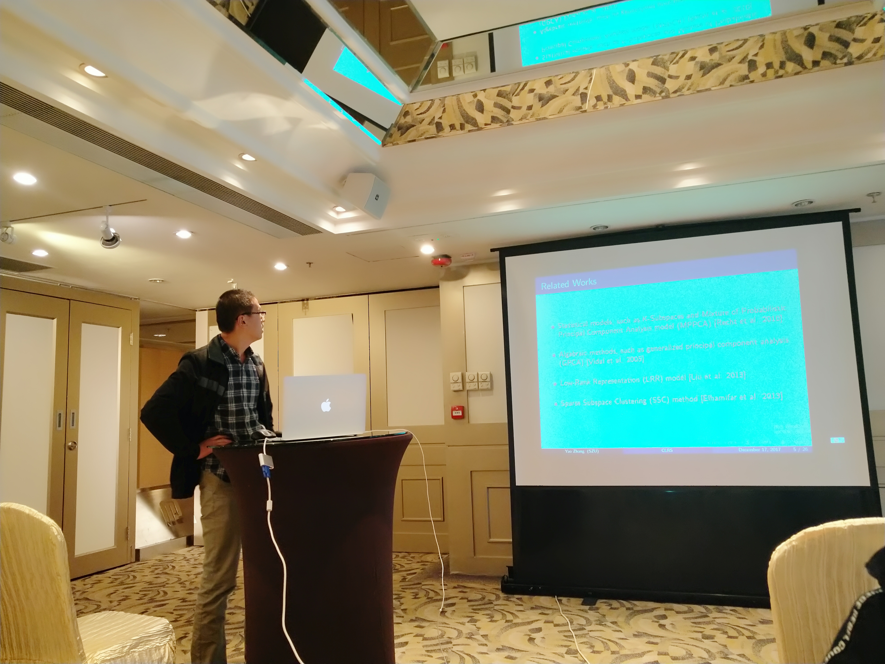

|
 |
Dr. Yao Zhang
Beauty is suffering.
Email: zhangyao2@nbu.edu.cn
Please feel free to stop by at my office 919, EECS.
My office timing is from 08:30 to 17:00 for a workweek.
Science is about understanding the world, while engineering is about changing it.
|
Biography
Yao was born and raised in a rural village near Weishan Lake in northwestern Jiangsu, China. He spent his entire childhood there and completed his early education within the local school system.
After earning his B.S. and M.S. degrees in Mathematics from Shenzhen University, Yao worked at a semiconductor company near Lihu Lake in Wuxi and ran a small street stall. In the fall of 2022, he married a doctor, marking a significant milestone in his personal life.
Yao served as a research assistant at the Chinese Academy of Sciences before earning his Ph.D. in Astronomy in September 2024. He is currently a Postdoctoral Researcher at Ningbo University, focusing on artificial intelligence and its applications in science and engineering.
Research Interests
|